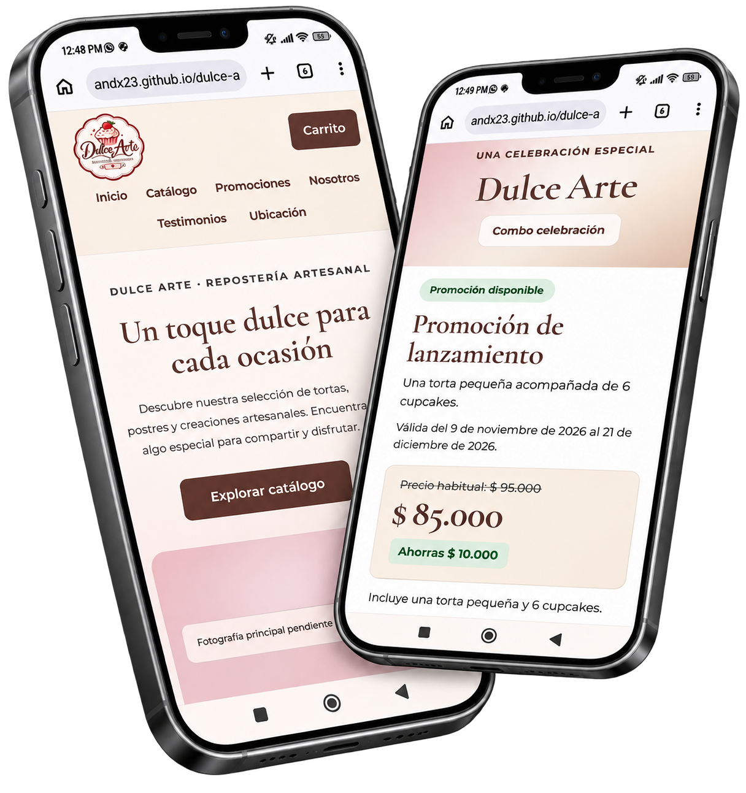
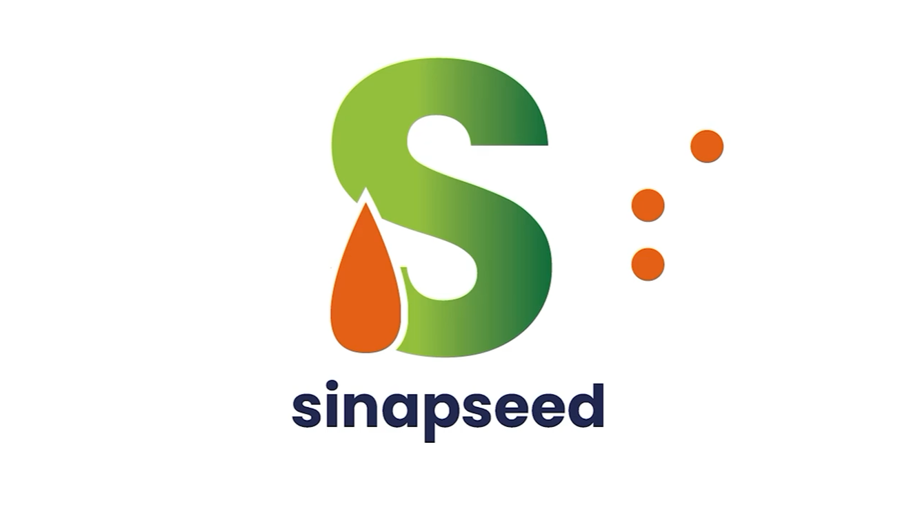
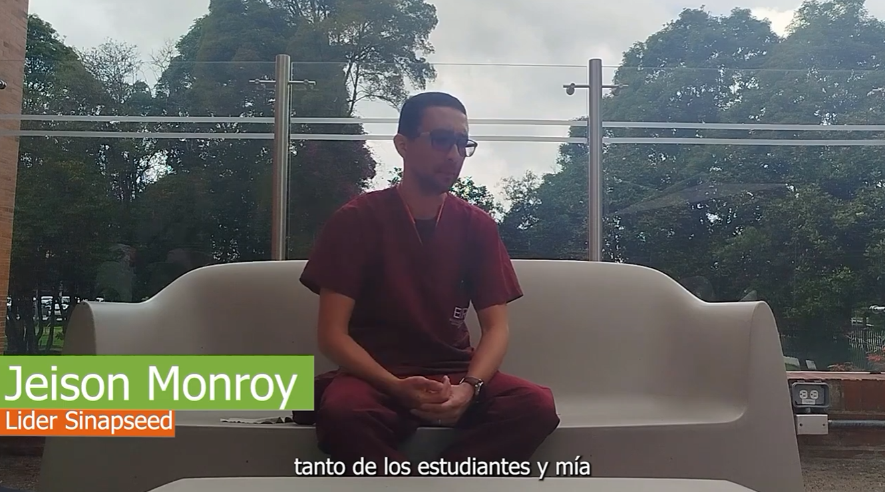
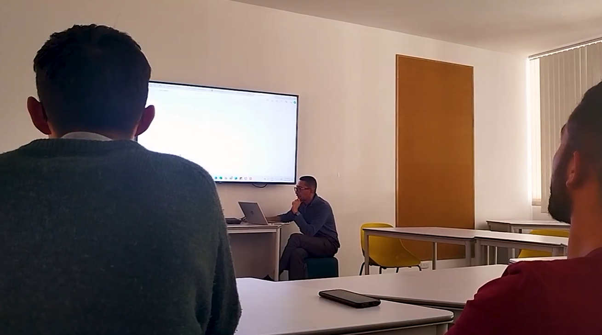

PROYECTOS
Una selección de ideas, conceptos y experiencias creativas desarrolladas a través del diseño, la tecnología y la narrativa audiovisual.
DULCE ARTE.
Experiencia digital desarrollada para una marca de repostería, integrando su catálogo de productos y propuesta visual en una plataforma web accesible y adaptable a diferentes dispositivos.
VISITAR PÁGINA WEB ↗
ENEMIGO PÚBLICO# ZERO
Exploración creativa de identidad visual y diseño gráfico para un proyecto de videojuego, combinando atmósferas, conceptos visuales y composiciones editoriales.
SIGUIENTE PROYECTO ↗


ENEMIGO PÚBLICO# ZERO
Exploración audiovisual enfocada en la edición, el ritmo visual y la narrativa, utilizando recursos cinematográficos para desarrollar la atmósfera del proyecto.
VER ANIMACIÓN ↗ FOTOGRAMA / 001
FOTOGRAMA / 001


SINAP SEED.
Proyecto de creación de contenido enfocado en la comunicación audiovisual y la narrativa visual, explorando formas creativas de conectar ideas con las audiencias.
VER DOCUMENTAL ↗


MÁS QUE SOLO IDEAS.
Cada proyecto es una oportunidad para crear algo significativo.
CREEMOS ALGO JUNTOS ↗